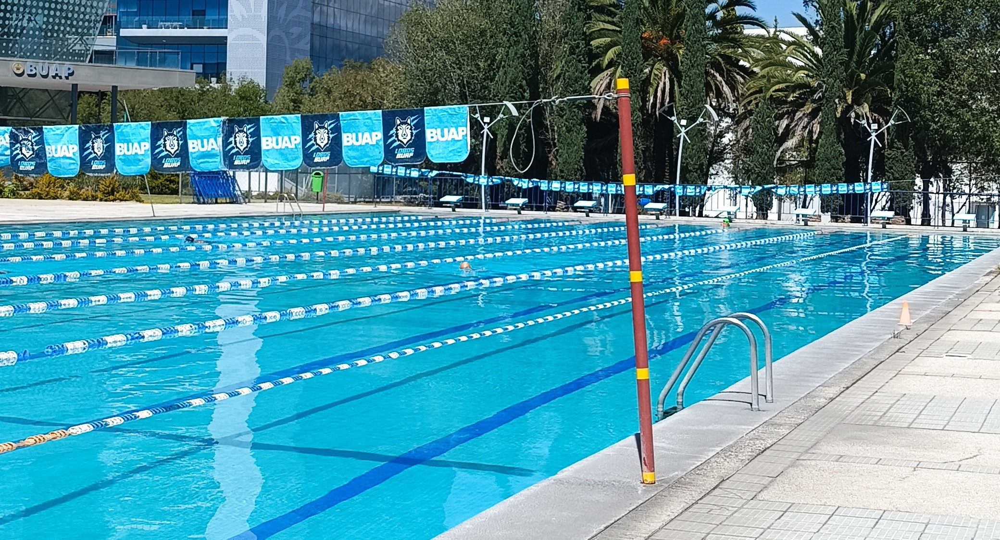
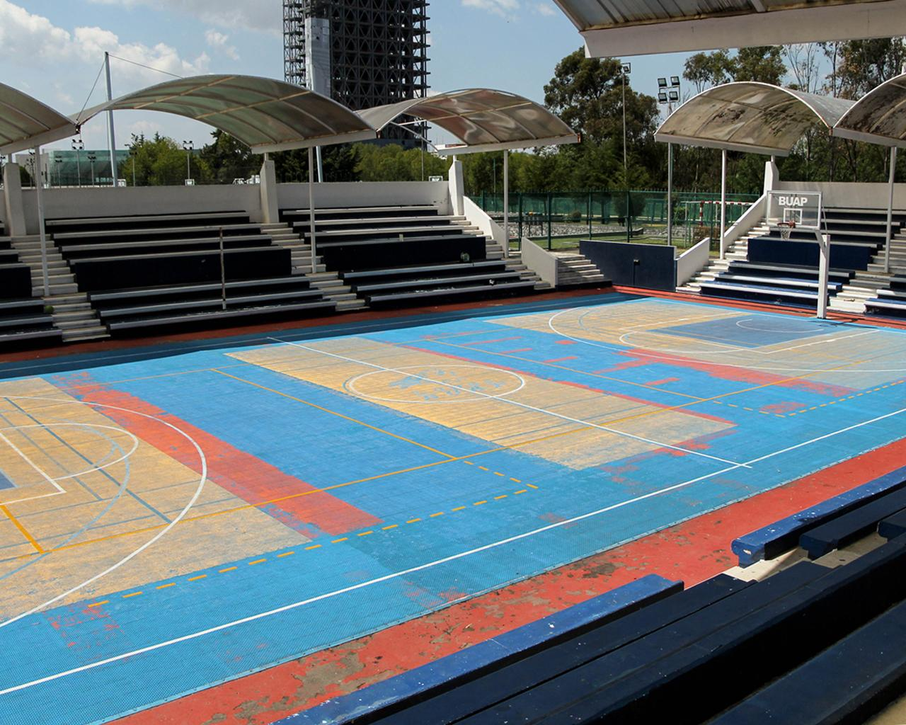
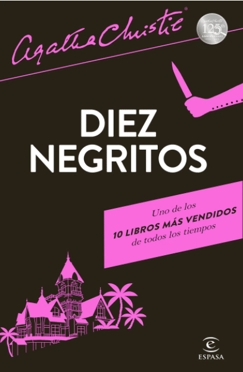
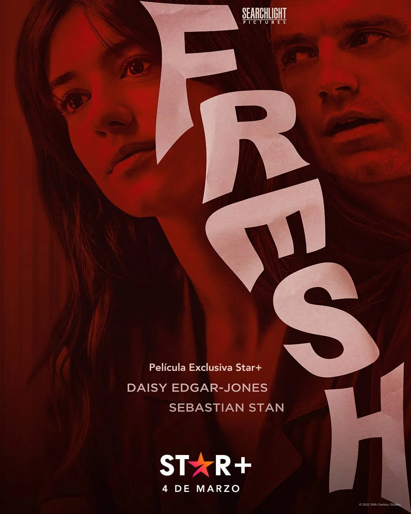
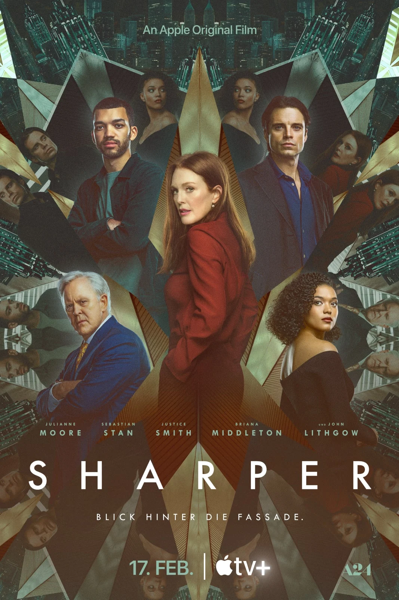
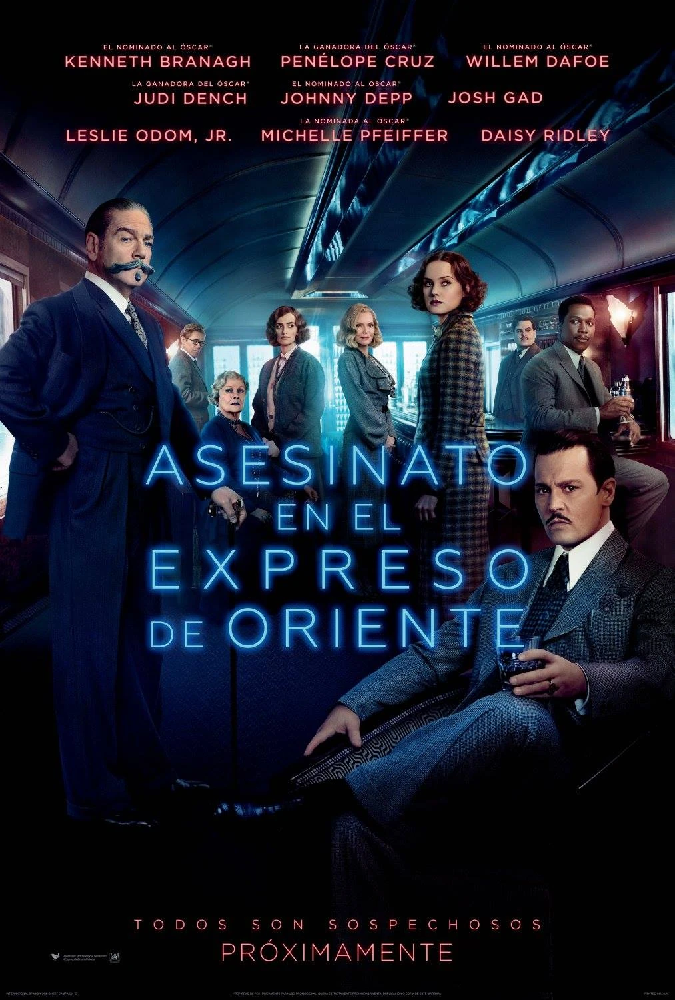
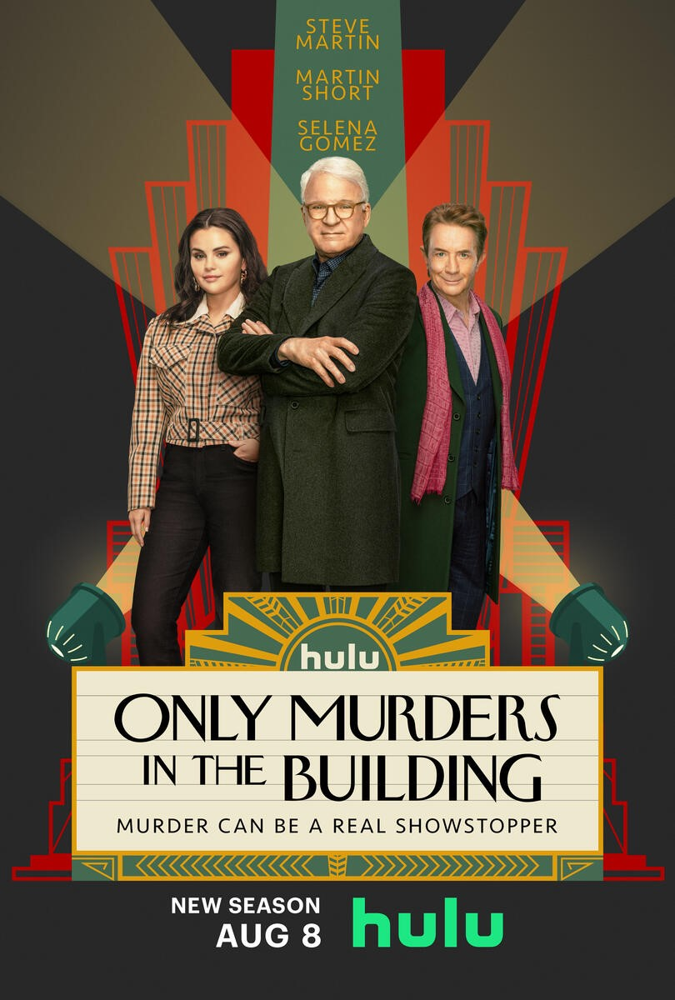
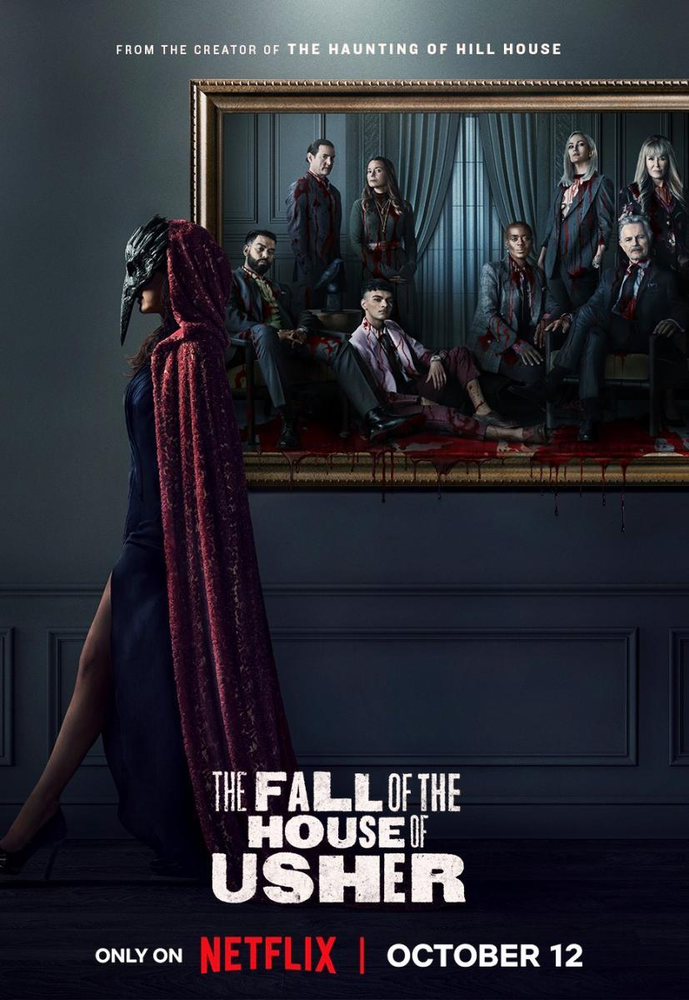

MIS HOBBIES
Bienvenido a mi mundo de hobbies, aquí, los deportes me mantienen en movimiento, desafiando mis límites y enseñándome el valor de la persistencia. Los libros abren puertas a universos desconocidos, permitiéndome vivir mil vidas en una y explorar profundidades de pensamiento y emoción que solo la literatura puede ofrecer. Y cuando se trata de relajarme, nada como sumergirme en el vasto mundo de películas y series, donde cada episodio es una nueva aventura. Este espacio está dedicado a compartir esas pasiones, reflexiones sobre mis lecturas favoritas, y las lecciones aprendidas tanto en el campo de juego como en cada trama absorbente.
DEPORTES
NATACIÓN
Adoro nadar porque me hace sentir libre y fuerte, como si me alejara de todo lo de ocurre a mi alrededor mientras nado. Es como si estuviera en mi propio mundo, concentrándome solo en cómo respiro y muevo los brazos. Prefiero nadar crol porque es rápido y me hace sentir que estoy volando en el agua, y también me gusta mucho mariposa porque es más difícil y me siento fuerte cada vez que completo una brazada. Estos dos estilos son mis favoritos porque me ayudan a sentirme más unida al agua, haciendo que cada vez que nado sea una experiencia que me renueva y me llena de energía.
Estos son los estilos de nado que más practico:
- Crol
- Pecho
- Dorso
- Mariposa

VOLEIBOL
Me gusta mucho jugar al voleibol porque es un deporte que une rapidez, fuerza y el trabajar juntos de una forma única. Me emociona mucho cuando tengo que saltar alto para bloquear la pelota o hacer un buen remate, y me encanta cómo todos en el equipo tenemos que movernos juntos y rápido para no dejar caer la pelota. Jugar voleibol también me ha enseñado lo importante que es hablar claro con los demás y confiar uno en el otro, tanto jugando, como en la vida diaria.
Estos son mis jugadores de voleibol favoritos
- Lorenzo Bernardi
- Giba
- Valerio Vermiglio
- Karch Kiraly

LEER
Misterio/Suspenso
Me fascina sumergirme en las páginas llenas de misterio y suspenso, ya que cada historia me desafía a resolver intrigas y descifrar enigmas. La emoción de seguir el rastro de pistas es una experiencia que me cautiva y me sumerge en un mundo de intriga y sorpresas. Los libros de misterio y suspenso son como un rompecabezas emocionante que me atrapa desde el principio hasta el final, dejándome con ganas de más.
Te recomiendo este libro:
Diez negritos - Agatha Christies

DISTOPÍA
Me encanta el fascinante mundo de las distopías, donde las sociedades se ven desafiadas por visiones alternativas del futuro. Cada historia me invita a reflexionar sobre la naturaleza humana, la política y el poder, mientras explora mundos imaginarios que, aunque distantes, reflejan aspectos inquietantes de nuestra realidad. Las distopías me ofrecen una ventana a la especulación y la crítica social, y encuentro un profundo placer en explorar estas narrativas que desafían los límites de la imaginación y la sociedad.
Te recomiendo estos 5 libros sobre mundos distópicos:
- Divergente
- Maze Runner
- Los juegos del hambre
- Apocalipsis
- Ensayo sobre la ceguera
 Portada del libro
Libro en pdf
Portada del libro
Libro en pdf
CINE
El cine, ver películas y series son mi pasión porque cada historia es un viaje emocionante que me transporta a mundos lejanos y me permite experimentar una amplia gama de emociones. Desde dramas conmovedores, hasta emocionantes aventuras y comedias hilarantes. Disfruto explorando diferentes géneros y descubriendo nuevas narrativas y personajes. Además, el cine y las series ofrecen una forma única de entretenimiento que puedo disfrutar tanto sola como en compañía de amigos y familiares, creando momentos memorables y compartidos que atesoraré para siempre.
Top 5 de películas y series de suspenso favoritas:
- Fresh
- Sharper
- Asesinato en el expreso de oriente
- Only murders in the building
- La caída de la Casa Usher




